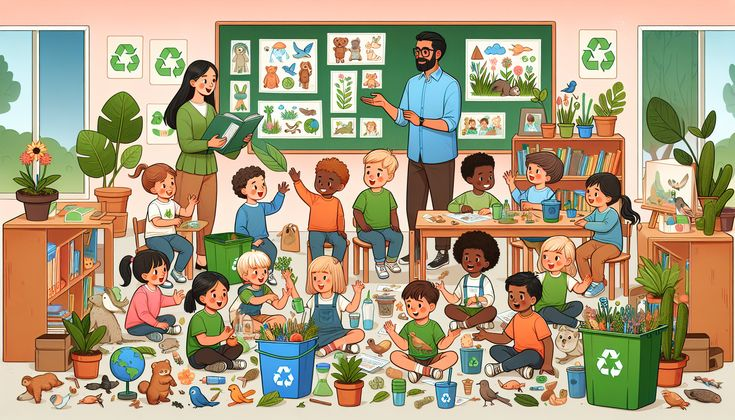

O desenvolvimento rural no Brasil tem sido moldado por uma série de políticas públicas ao longo do tempo, com marcos importantes que remontam ao início do século XX. Durante o governo de Getúlio Vargas, na década de 1930, foram implementadas as primeiras medidas significativas, como a criação do Instituto Brasileiro de Geografia e Estatística (IBGE) e do Serviço de Proteção ao Índio (SPI). Nos anos 1960, a Revolução Verde trouxe a modernização da agricultura, impulsionada por programas de financiamento e incentivos fiscais para a mecanização e uso de insumos químicos. O surgimento de movimentos sociais, como o Movimento dos Trabalhadores Rurais Sem Terra (MST), também pressionou por reformas agrárias e políticas mais inclusivas.
Nas últimas décadas, o foco das políticas públicas evoluiu para incluir a sustentabilidade e a inclusão social. A criação do Ministério do Desenvolvimento Agrário (MDA) em 1999 marcou um avanço significativo, consolidando programas como o Programa Nacional de Fortalecimento da Agricultura Familiar (PRONAF), que visa apoiar pequenos produtores. Além disso, políticas ambientais e de conservação ganharam destaque, com iniciativas como o Plano ABC (Agricultura de Baixa Emissão de Carbono), que incentiva práticas agrícolas sustentáveis. Esses esforços refletem um compromisso crescente com a promoção de um desenvolvimento rural mais equilibrado e sustentável, enfrentando desafios como a desigualdade fundiária e a necessidade de preservar os recursos naturais.
Parcerias público-privadas (PPPs) têm se mostrado fundamentais no fomento ao desenvolvimento rural, unindo recursos e expertise de setores públicos e privados para implementar projetos sustentáveis e inovadores. No Brasil, uma das iniciativas de destaque é a colaboração entre governos estaduais e empresas agroindustriais para o desenvolvimento de infraestrutura rural. Essas parcerias têm viabilizado a construção e manutenção de estradas vicinais, essenciais para o escoamento da produção agrícola, além de melhorar o acesso a serviços básicos como saúde e educação nas áreas rurais.
Um exemplo concreto é o Programa de Parcerias Público-Privadas de Irrigação, que busca ampliar a área irrigada no semiárido brasileiro através da cooperação entre o setor público e empresas especializadas em tecnologia de irrigação. Esse programa tem sido crucial para a segurança hídrica e alimentar, permitindo que agricultores enfrentem melhor os períodos de seca e aumentem a produtividade de suas lavouras. As PPPs não só impulsionam o desenvolvimento econômico, mas também promovem a inclusão social e a sustentabilidade ambiental, mostrando-se um modelo eficiente para o desenvolvimento rural no Brasil.
A educação e a formação profissional são pilares essenciais para o desenvolvimento sustentável do meio rural. Investir em programas educativos específicos para a população rural contribui para a capacitação dos trabalhadores do campo, melhorando suas habilidades técnicas e gerenciais. No Brasil, iniciativas como o Programa Nacional de Educação na Reforma Agrária (Pronera) têm sido fundamentais para oferecer acesso à educação básica e superior a jovens e adultos em assentamentos de reforma agrária, promovendo a inclusão social e econômica dessas comunidades.
A formação profissional, por sua vez, prepara os agricultores para adotar práticas agrícolas mais eficientes e sustentáveis, além de facilitar o acesso a novas tecnologias e mercados. Cursos técnicos e programas de extensão rural oferecidos por instituições como o Serviço Nacional de Aprendizagem Rural (Senar) são exemplos de iniciativas que ajudam a modernizar o setor agropecuário, aumentando a produtividade e a competitividade dos pequenos e médios produtores. Ao fomentar a educação e a formação profissional no meio rural, criam-se oportunidades para um desenvolvimento mais equitativo e sustentável, reduzindo as desigualdades e fortalecendo a economia rural.
A inclusão de mulheres e jovens no desenvolvimento rural é crucial para promover uma sociedade mais justa e equilibrada, além de impulsionar a sustentabilidade e a inovação no campo. As mulheres, tradicionalmente envolvidas em diversas atividades agrícolas e domésticas, desempenham um papel vital na economia rural. Políticas públicas que incentivam o acesso das mulheres a recursos financeiros, educação e tecnologias agrícolas não apenas fortalecem suas capacidades produtivas, mas também contribuem para a equidade de gênero e o bem-estar das comunidades rurais. Programas de microcrédito, cooperativas agrícolas lideradas por mulheres e treinamentos específicos são exemplos de iniciativas que promovem essa inclusão.
Os jovens, por outro lado, representam o futuro do setor agrícola e a renovação das práticas e conhecimentos tradicionais. Incentivar a participação dos jovens no desenvolvimento rural, por meio de programas de capacitação técnica, empreendedorismo e acesso a tecnologias inovadoras, é essencial para garantir a continuidade e a evolução do setor. Políticas que apoiam a educação agrícola, startups rurais e projetos de inovação tecnológica ajudam a manter os jovens no campo, evitando o êxodo rural e estimulando a criação de novas oportunidades econômicas. A inclusão ativa de mulheres e jovens é, portanto, uma estratégia fundamental para um desenvolvimento rural sustentável e dinâmico.